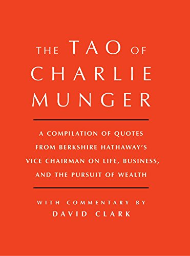

大卫·克拉克（David Clark）持有金融与法律双学位，1970年代末是"最初的巴菲特研究者"（the original Buffettologists）之一——一群早期伯克希尔股东自发组成的小圈子，专门拆解沃伦·巴菲特的投资方法。1997年，他与玛丽·巴菲特（Mary Buffett，1980至1993年间是巴菲特长子彼得·巴菲特的妻子）合著的第一本书《Buffettology》登上《纽约时报》畅销榜，此后二十年两人又合著了《The New Buffettology》《The Tao of Warren Buffett》《Warren Buffett and the Interpretation of Financial Statements》等七部书，合计译成二十四种语言。2017年1月3日，克拉克独立署名、由Scribner出版256页的《Tao of Charlie Munger》——官方英文书名没有开头的"The"，封面上的"THE"属于版式中的普通冠词。
这本书不是芒格授权的传记，而是克拉克从股东信、韦斯科金融（Wesco Financial）与《每日期刊》（Daily Journal）历年股东会问答、公开演讲中摘出138条语录，逐条附上自己的解读，短的一段，长的能铺开好几页。全书分四部分：芒格论成功投资、芒格论商业银行业与经济、芒格哲学在商业中的运用、芒格论人生教育与幸福追求。书中反复出现的句子包括"知道自己不懂什么，比聪明更有用"（Knowing what you don't know is more useful than being brilliant）、"我一辈子都没见过不每天阅读的聪明人——一个都没有"（In my whole life, I have known no wise people who didn't read all the time—none, zero），以及那条被巴菲特写进2015年伯克希尔股东信的箴言——宁可以合理价格买一家优秀公司，也不要以便宜价格买一家平庸公司；巴菲特在信里总结道："伯克希尔是按查理的蓝图建成的"（Berkshire has been built to Charlie's blueprint）。克拉克在开篇交代了芒格的求学经历：在密歇根大学学数学，二战期间被派去加州理工受训做气象官，没拿到本科学位，靠家族世交、哈佛法学院前院长罗斯科·庞德（Roscoe Pound）打的一通电话破格入读哈佛法学院，1948年以优等成绩毕业。
书架上已经有《穷查理宝典》和《探索智慧：从达尔文到芒格》，这本书和它们各占不同位置。《穷查理宝典》由芒格挚友彼得·考夫曼（Peter D. Kaufman）编纂、经芒格本人审定，收录了历年演讲全文与生平影像，篇幅接近五百页，性质上是"官方文献"；《探索智慧》的作者彼得·贝弗林（Peter Bevelin）借芒格的多元思维模型框架，自己重新组织了一遍心理学与科学案例，是一次"再创作"。《The Tao of Charlie Munger》则更像一本速查手册：克拉克既不是芒格的家族朋友，书稿也未经芒格审阅，他只是把语录拆进投资、商业、处世、人生四个抽屉，方便读者按主题翻查。也正因如此，这本书里不少语录和《穷查理宝典》里的重叠，克拉克的评注偏向简短的引申发挥，未必能替代原始演讲的完整语境。
书里谈"重仓下注"的部分，能和芒格自己的经历对上号：1973到1974年熊市中，芒格合伙基金连续两年分别下跌31.9%和31.5%，跌幅超过大盘；到1974年底，他仓位里最大的两笔持仓——蓝筹印花（Blue Chip Stamps）和New America Fund——合计占到组合的84%，其中一位合伙人崩盘前投入35万美元、腰斩之后执意退出，芒格没能劝住他。克拉克把芒格那句"当胜算大幅偏向你时，重仓下注"（When the odds are heavily in your favor, bet heavily）放在这段历史旁边做注解，提醒读者集中持仓的前提是先弄清楚能力圈的边界——这也是全书反复回到的一条底线："我所做的一切，不过是尽量不当一个蠢货"（All I am trying to do is not to be idiotic）。对已经读过《穷查理宝典》、想按买入、加仓、止损、招人、定价等场景快速查到芒格怎么说的读者，这本书补的是查阅效率，不是新的思想；要引用芒格原话，仍应沿出处回到演讲或股东会记录。